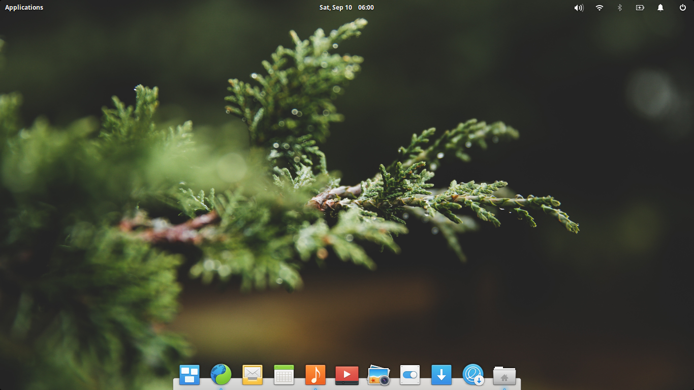

Pengertian Qemu(KVM) :
Qemu(KVM) adalah Aplikasi emulator yang mengandalkan translasi binary untuk mencapai kecepatan yang lanyak saat berjalan di arsitektur komputer host. Dalam hubungan dengan komputer host. Qemu menyediakan satu perangkat model yang memungkinkan untuk menjalankan berbagai system operasi yang belum dimodifikasi sehingga dapat ditampilkan dalam hosted virtual marchine monitor. Qemu juga dapat memberikan dukungan percepatan modus campuran binary translation (untuk kemel code) dan native execution (untuk user code) yang model Kerja nya hampir sama dengan VMWare Workstation atau Microsoft Vitual PC.
Fungsi Qemu(KVM) :
kita dapat memiliki beberapa OS sekaligus dalam satu komputer tanpa harus menghapus atau mengganti OS yang sudah kita miliki sebelumnya pada komputer kita.
Beberapa kelebihan dari Qemu(KVM) :
Cara - cara penggunaan Qemu.
1. Installasi OS :
Sebelum kita melkukan installasi Qemu(KVM) lebih baik kita menginstall OS yang kita ingin gunakan nanti,disini saya akan memberikan beberapa Link OS dan kalian bisa mencobanya :
https://elementary.io
https://alpinelinux.org
https://www.ubuntu.com
https://linuxconfig.org
Installasi Qemu(KVM) :
$ sudo apt-get update
$ sudo apt-get install -y qemu-kvm qemu virt-manager virt-viewer libvirt-bin
Menconfigure Qemu(KVM) :
sudo virt-install --name=elementary --ram=1024 --vcpus=1 --cdrom=/home/fesa/Downloads/elementaryos-5.0-stable.20181016.isoo --os-type=linux --os-variant=rhel7 --network bridge=br1 --graphics=spice --disk path=/home/fesa/Downloads/elementary.dsk,size=4
Beberapa penjelasan di atas :
Disini saya menggunakan Elementary OS dan jika kita sudah menginstall maka akan muncul pop-up seperti berikut :
Graphical Mode
$ sudo virt-manager
Semoga berhasil mencoba kawan.jika terjadi error atau hal lain maka bisa chat dengan admin lewat medsos dibawah.